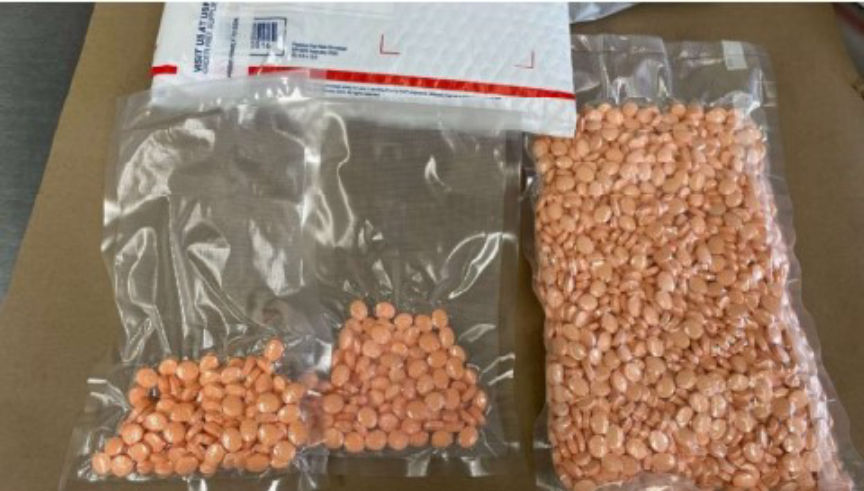
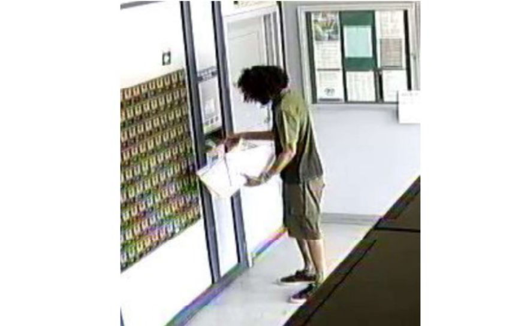
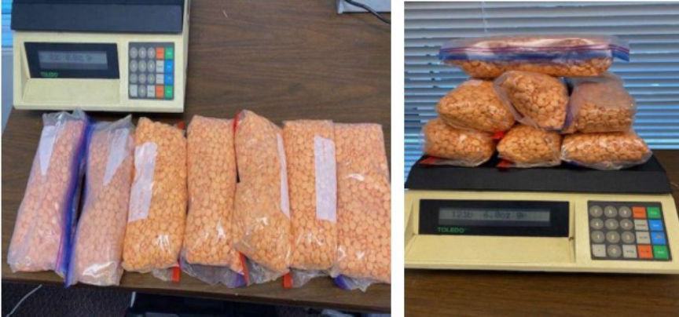
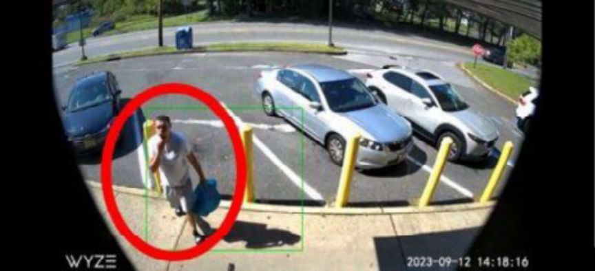
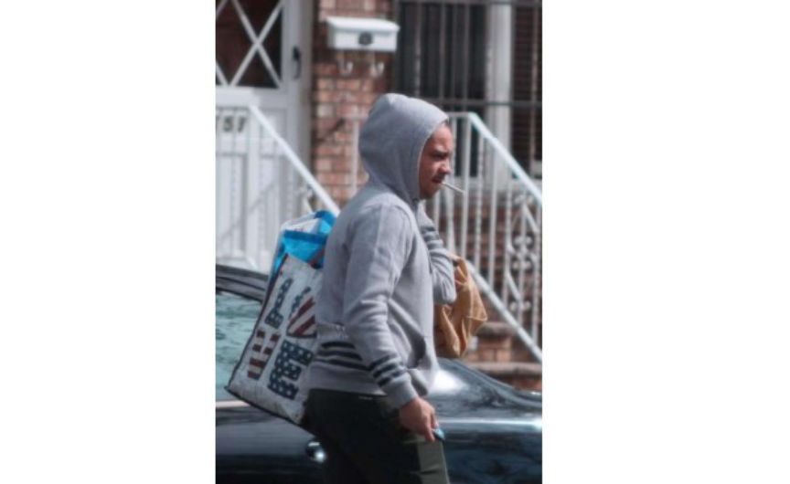
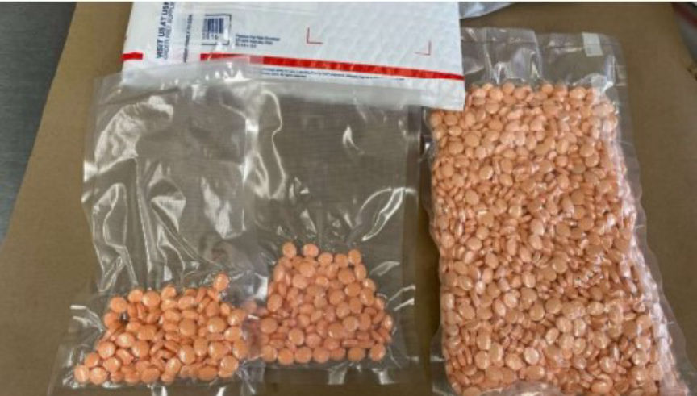
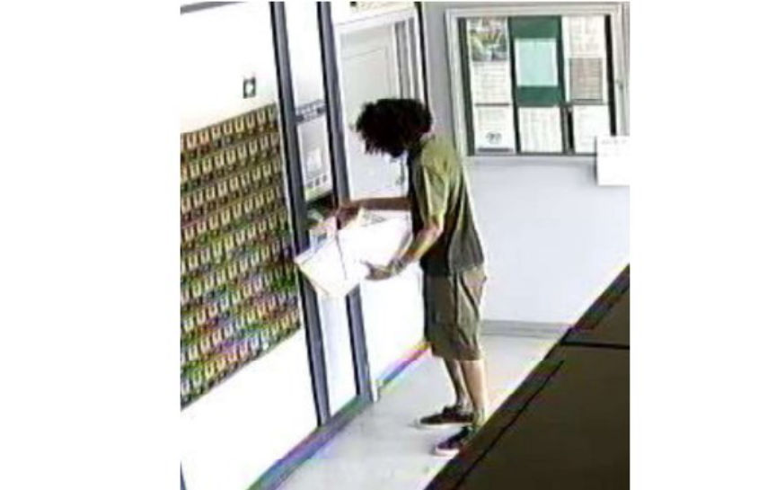
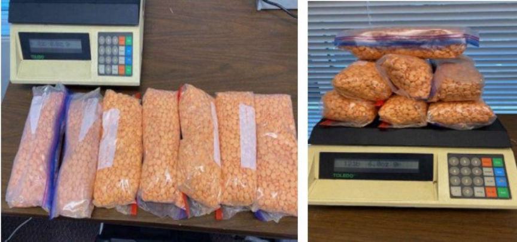
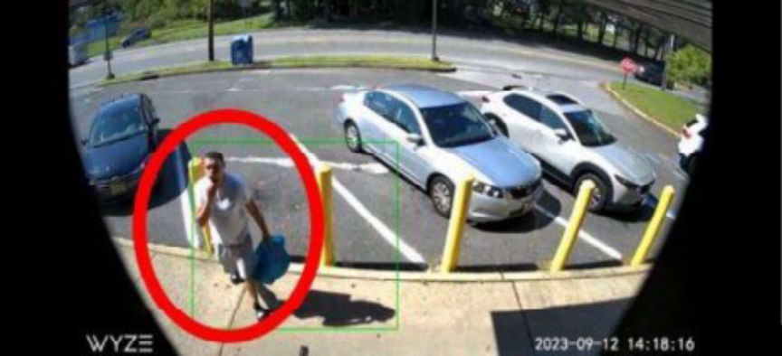
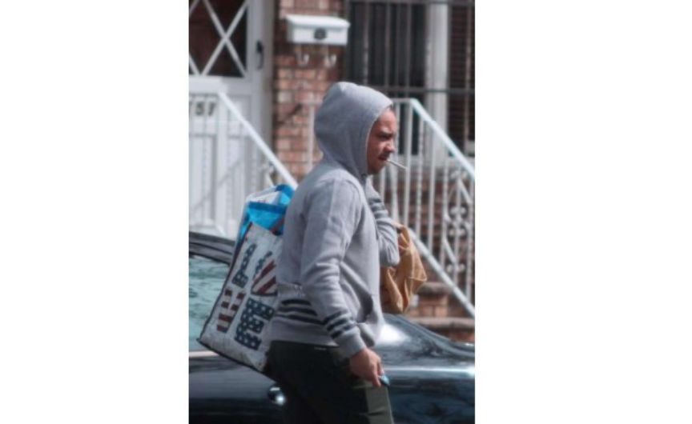

Counterfeit Adderall vendors "MrJohnson" "NuveoDeluxe" and "AllStateRx" Busted
~4 min read | Published on 2024-02-26, tagged Arrested, Darkweb-Vendor, Drug-Bust, Drugs using 805 words.
Three men were charged for participating in the distribution of counterfeit Adderall pills through multiple dark web vendor accounts.

According to court documents, Joseph James Vasquez, Joshua William Vasquez, and Rafael Antonio Roman conspired in the distribution of counterfeit Adderall pills on the dark web through the vendor profiles; "MrJohnson," "NuveoDeluxe," and "AllStateRx."
The investigators launched investigations into NuveoDeluxe in June 2023 and made several undercover purchases. The purchases revealed that the vendor mailed his drug packages from post offices in the Middle District of Florida.
On July 9, 2023, the investigators purchased 100 Adderall pills from NuveoDeluxe on ASAP. On July 10, 2023, the investigators conducted surveillance at several post offices in the Middle District of Florida.
The investigators observed as Joseph drove into the parking lot of a post office in Clarcona, Florida. He exited the vehicle with several USPS Priority Mail Envelopes, walked into the post office, and deposited the packages.
The investigators followed Joshua to several post offices and USPS collection boxes. All the packages Joseph dropped off had the same fictitious return address. One of the packages was addressed to the undercover address given to NuveoDeluxe the previous day. The package contained 113 orange pills that tested positive for meth.

Further investigations revealed that Joseph had a P.O. Box that had been receiving packages mailed from New Jersey. On July 17, 2023, the investigators intercepted and opened a package destined for Joseph's P.O. Box. The package contained approximately 15,000 counterfeit Adderall tablets that weighed 5.5 kilograms.

The investigators established that the package had been mailed from a post office in New Jersey. Surveillance footage acquired from the post office revealed that Joshua's vehicle left the post office shortly after the package was mailed. The investigators also established that the package was being tracked by an IP address assigned to Joshua's phone.
Surveillance conducted at the post office on August 3, 2023, revealed that Joshua dropped off several USPS Priority Mail parcels. The investigators seized one of the packages. On opening it, the investigators found approximately two pounds of orange tablets.
On September 11, the investigators made an undercover purchase from AllStateRx through Bohemia. The investigators set up surveillance at Joshua's residence the next day. Joshua exited his house carrying a large blue bag and got into his vehicle. The investigators followed him to the post office where he dropped off 19 USPS Priority Mail parcels. One of the packages was destined for the address given to AllStateRx by the investigators.

The investigators launched investigations into MrJohnson in October 2022, when the investigators purchased Adderall from the vendor on Tor2Door. Lab tests revealed that the pills mailed to the investigators contained 40.43 grams of methamphetamine.
Tracking of undercover purchases revealed that MrJohnson mailed drug packages from Brooklyn, New York. In September 2023, the investigators questioned employees at post offices in Brooklyn. At one post office, an employee disclosed that a man had been dropping off numerous packages.
The investigators made another undercover purchase from MrJohnson on September 21 and set up surveillance at the post office on September 27. During the surveillance, the investigators observed Roman walk into the post office carrying two shopping bags. He dropped off a large number of packages and left. The investigators followed him to another post office where he dropped off more parcels and left.

One of the packages was addressed to the investigator's undercover address. The investigators opened the package and found that it contained orange pills that tested positive for methamphetamine.
Further surveillance linked Roman to the mailing of drug packages linked to NuveoDeluxe. The investigators also observed Joshua at properties associated with Roman.
Blockchain analysis revealed that NuveoDeluxe's bitcoin ended up in an undisclosed exchange that offers crypto for gift cards. Information acquired from the exchange revealed that the gift cards were redeemed by Joseph.
AllStateRx also used the same exchange. The investigators established that the account associated with AllStateRx at the exchange was accessed from Joshua's IP address.
The investigators also established that NuveoDeluxe and AllStateRx had transferred over $130,000 in Bitcoin to each other. The most recent transfer was of approximately $9,000 in bitcoin and took place on January 12, 2024.
The investigators established that since June 2022, MrJohnson transferred bitcoin worth over $1 million. The bitcoin was cashed out through accounts on an undisclosed financial institution. Information acquired from the institution revealed that one of the accounts belonged to Roman.
Further investigations revealed that from August to mid-September 2023, the three vendors sent crypto to wallets that sent it to accounts at the undisclosed financial institution. The accounts were accessed through an IP address associated with Roman's residence.
Arrest warrants against the three men were issued on February 9, 2024. The defendants were detained pending trial on February 22.

A counterfeit Adderall pills package seized by the investigators
According to court documents, Joseph James Vasquez, Joshua William Vasquez, and Rafael Antonio Roman conspired in the distribution of counterfeit Adderall pills on the dark web through the vendor profiles; "MrJohnson," "NuveoDeluxe," and "AllStateRx."
The investigators launched investigations into NuveoDeluxe in June 2023 and made several undercover purchases. The purchases revealed that the vendor mailed his drug packages from post offices in the Middle District of Florida.
On July 9, 2023, the investigators purchased 100 Adderall pills from NuveoDeluxe on ASAP. On July 10, 2023, the investigators conducted surveillance at several post offices in the Middle District of Florida.
The investigators observed as Joseph drove into the parking lot of a post office in Clarcona, Florida. He exited the vehicle with several USPS Priority Mail Envelopes, walked into the post office, and deposited the packages.
The investigators followed Joshua to several post offices and USPS collection boxes. All the packages Joseph dropped off had the same fictitious return address. One of the packages was addressed to the undercover address given to NuveoDeluxe the previous day. The package contained 113 orange pills that tested positive for meth.

Joseph mailing drug parcels
Further investigations revealed that Joseph had a P.O. Box that had been receiving packages mailed from New Jersey. On July 17, 2023, the investigators intercepted and opened a package destined for Joseph's P.O. Box. The package contained approximately 15,000 counterfeit Adderall tablets that weighed 5.5 kilograms.

The intercepted counterfeit Adderall pills
The investigators established that the package had been mailed from a post office in New Jersey. Surveillance footage acquired from the post office revealed that Joshua's vehicle left the post office shortly after the package was mailed. The investigators also established that the package was being tracked by an IP address assigned to Joshua's phone.
Surveillance conducted at the post office on August 3, 2023, revealed that Joshua dropped off several USPS Priority Mail parcels. The investigators seized one of the packages. On opening it, the investigators found approximately two pounds of orange tablets.
On September 11, the investigators made an undercover purchase from AllStateRx through Bohemia. The investigators set up surveillance at Joshua's residence the next day. Joshua exited his house carrying a large blue bag and got into his vehicle. The investigators followed him to the post office where he dropped off 19 USPS Priority Mail parcels. One of the packages was destined for the address given to AllStateRx by the investigators.

Joshua walking into the post office
The investigators launched investigations into MrJohnson in October 2022, when the investigators purchased Adderall from the vendor on Tor2Door. Lab tests revealed that the pills mailed to the investigators contained 40.43 grams of methamphetamine.
Tracking of undercover purchases revealed that MrJohnson mailed drug packages from Brooklyn, New York. In September 2023, the investigators questioned employees at post offices in Brooklyn. At one post office, an employee disclosed that a man had been dropping off numerous packages.
The investigators made another undercover purchase from MrJohnson on September 21 and set up surveillance at the post office on September 27. During the surveillance, the investigators observed Roman walk into the post office carrying two shopping bags. He dropped off a large number of packages and left. The investigators followed him to another post office where he dropped off more parcels and left.

Roman carrying drugs
One of the packages was addressed to the investigator's undercover address. The investigators opened the package and found that it contained orange pills that tested positive for methamphetamine.
Further surveillance linked Roman to the mailing of drug packages linked to NuveoDeluxe. The investigators also observed Joshua at properties associated with Roman.
Blockchain analysis revealed that NuveoDeluxe's bitcoin ended up in an undisclosed exchange that offers crypto for gift cards. Information acquired from the exchange revealed that the gift cards were redeemed by Joseph.
AllStateRx also used the same exchange. The investigators established that the account associated with AllStateRx at the exchange was accessed from Joshua's IP address.
The investigators also established that NuveoDeluxe and AllStateRx had transferred over $130,000 in Bitcoin to each other. The most recent transfer was of approximately $9,000 in bitcoin and took place on January 12, 2024.
The investigators established that since June 2022, MrJohnson transferred bitcoin worth over $1 million. The bitcoin was cashed out through accounts on an undisclosed financial institution. Information acquired from the institution revealed that one of the accounts belonged to Roman.
Further investigations revealed that from August to mid-September 2023, the three vendors sent crypto to wallets that sent it to accounts at the undisclosed financial institution. The accounts were accessed through an IP address associated with Roman's residence.
Arrest warrants against the three men were issued on February 9, 2024. The defendants were detained pending trial on February 22.